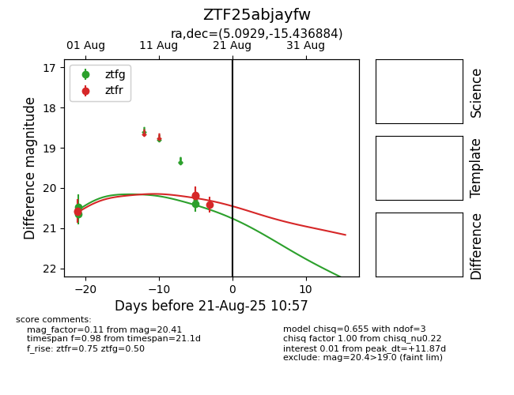

Target ZTF25abjayfw at 2025-08-21 10:57, see:
FINK: fink-portal.org/ZTF25abjayfw
Lasair: lasair-ztf.lsst.ac.uk/objects/ZTF25abjayfw
ALeRCE: alerce.online/object/ZTF25abjayfw
alt names
ZTF25abjayfw (ztf,alerce)
coordinates:
equatorial (ra, dec) = (5.0929,-15.43688)
galactic (l, b) = (89.6718,-76.26006)
photometry
last ztfg=20.39, ztfr=20.41
3 ztfg, 5 ztfr detections
